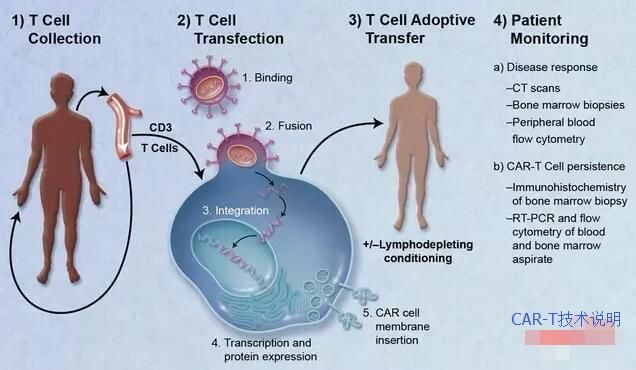

CAR-T免疫治疗介绍
先介绍下CAR-T。无论从原理到操作，CAR-T和TCR-T都十分相似。这种方法需要提取患者血液中的T细胞，进行体外的人工基因编辑，使得这些原本识别其他抗原的T细胞依赖导入的基因而识别目标肿瘤的表面抗原。经过几代技术的发展，CAR-T/TCR-T技术正在逐渐的成熟。但由于原代细胞的基因编辑工作难度之大使得技术门槛较高，仅诺华、JUNO、Kite等公司开发的方法值得信任。这些CAR-T开发的先驱公司已经完成了不少临床试验，其中不乏喜人的成果。例如使用导入识别CD19/CD20的融合CD3-ξ基因的T细胞来治疗弥漫性大B细胞淋巴瘤效果非常不错，有效率到达80%-90%。在刚刚结束的ASCO 2017年会上，诺华公布了治疗方法CTL-119的初步结果。经过3个月的治疗，9位可评估患者中，8位患者骨髓中检查不到慢性淋巴细胞白血病征象，其中1位达到部分缓解。此前，诺华基于优秀的临床试验结果，已向FDA提交其CAR-T方法CTL-019治疗儿童及青少年复发或难治性B细胞急性淋巴细胞白血病的申请。

但这种优异的疗效需要多种前提条件的支持:肿瘤相关表面抗原明确;已经设计出成熟的结合能力强的融合CD3-ξ基因。而且这种方法回输的T细胞目前无法有效作用于实体瘤，仅对骨髓瘤、淋巴瘤等血液源性肿瘤有效，且造价极其昂贵。根据知名分析师的评估分析，将有机会获FDA批准上市的几个CAR-T产品的单次价格在20万到50万美元(折合人民币约140万-350万)之间。此外，安全性也是一个不容忽视的问题。JUNO公司治疗晚期血液瘤的CAR-T 临床试验JCAR015曾因入组患者免疫毒性副作用死亡事件2次被FDA叫停。显然，CAR-T治疗由于对T细胞激进的改造，需要更加严格的不良反应管理和临床监察。
虽然适应证范围有限、不良反应程度高，但并不阻碍研究者们普遍看好CAR-T/TCR-T技术赋予效应T细胞的强大能力，事实上CAR-T/TCR-T在脑洞大开的科学家手中已经玩出了多种新花样:包括利用CAR-T细胞携带杀伤药物，以精准靶向癌细胞;导入2种或2种以上的表面识别融合蛋白，以增加精准性;利用基因敲除技术或RNA干扰技术阻断待回输T细胞的免疫抑制通路，以应对实体瘤中免疫抑制微环境。未来随着基因编辑技术的发展和与其他药物联用的综合治疗方法的开发，CAR-T/TCR-T技术将有望应用于实体瘤治疗，并成为肿瘤治疗的有力手段之一。
简单来说:PD-1/PD-L1在更多的实体肿瘤治疗方面取得了好的效果，正在延长很多晚期患者的生命时间;CAR-T则被应用在血液瘤的治疗方面。